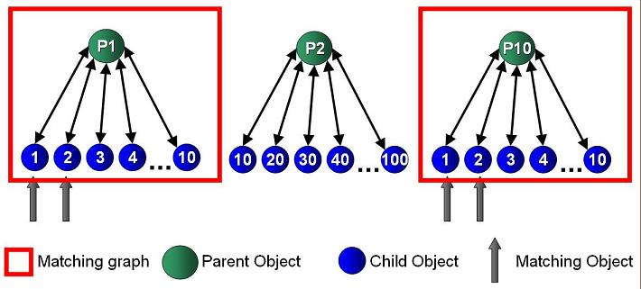

In some cases, you might want to store objects within the space that include references to other space objects – i.e. an object graph. With such object relationships, you might want to fetch a parent object that is associated with a child object(s) holds a specific data (join).
See the Modeling your data section for details about when you should construct strong relationship between parent-child objects (embed) and when you should not embed child objects within their parent but have the ID of child objects placed within the parent object.
The example below demonstrates how ID operations handle relationships between objects. This example using the readByIds batch operation to retrieve multiple space objects using on their ID:
ReadByIdsResult<Child> childrenObjResult = space.readByIds(Child.class,childrenIDs);
The example writes 10000 parent-child graphs into the space. Two types of graphs will be created with this example:
0, 1, 2, 3, 4, 5, 6, 7, 8, 9.0, 10, 20, 30, 40, 50, 60, 70, 80, 90.
The example demonstrates a simple approach locating all the parent objects that have two child objects with values of 1 and 2 – effectively a join operation using ID operations. This will return 5 matching graphs.
The full example source code can be downloaded here.
package com.j_spaces.examples.parentchild;
import com.gigaspaces.annotation.pojo.SpaceClass;
import com.gigaspaces.annotation.pojo.SpaceId;
import com.gigaspaces.annotation.pojo.SpaceIndex;
import com.gigaspaces.annotation.pojo.SpaceRouting;
import com.gigaspaces.metadata.index.SpaceIndexType;
;
@SpaceClass
public class Child {
private String parentID;
private Long data;
private String id;
public Child(){}
public Child(String id, String _parentID)
{
this.parentID = _parentID;
this.id = id;
}
public String toString()
{
return "ID:" + id + " data:" + data;
}
@SpaceIndex(type=SpaceIndexType.BASIC)
public Long getData() {
return data;
}
public void setData(Long data) {
this.data= data;
}
@SpaceId (autoGenerate = false)
public String getId() {
return id;
}
public void setId(String id) {
this.id = id;
}
@SpaceIndex(type=SpaceIndexType.BASIC)
@SpaceRouting
public String getParentID() {
return parentID;
}
public void setParentID(String parentID) {
this.parentID = parentID;
}
}
package com.j_spaces.examples.parentchild;
import java.rmi.RemoteException;
import org.openspaces.core.GigaSpace;
import net.jini.core.entry.UnusableEntryException;
import net.jini.core.transaction.TransactionException;
import com.gigaspaces.annotation.pojo.SpaceClass;
import com.gigaspaces.annotation.pojo.SpaceId;
import com.gigaspaces.annotation.pojo.SpaceIndex;
import com.gigaspaces.annotation.pojo.SpaceRouting;
import com.gigaspaces.client.ReadByIdsResult;
import com.gigaspaces.metadata.index.SpaceIndexType;
@SpaceClass
public class Parent {
private String childrenIDs[];
private transient Child children[];
private Long data;
private String id;
static final String ChildClassName = Child.class.getName();
public Parent() {
}
public Parent(String id) {
this.id = id;
}
public String _getChildrenDetails(GigaSpace space) throws
RemoteException,
TransactionException,
UnusableEntryException
{
String ret="";
Child[] childs = _getChildren(space);
for (int i=0;i<childs.length ; i++)
{
ret = ret + childs[i].toString() + " | ";
}
return ret;
}
public Child[] _getChildren(GigaSpace space) throws
RemoteException,
TransactionException,
UnusableEntryException
{
if (children == null)
{
ReadByIdsResult<Child> childrenObjResult = space.readByIds(Child.class,childrenIDs);
children = childrenObjResult.getResultsArray();
}
return children;
}
public String _getChildrenIDs()
{
String res ="";
for (int i=0 ; i< childrenIDs.length; i++)
{
res =res +childrenIDs[i] + "\n";
}
return res;
}
@SpaceIndex(type=SpaceIndexType.BASIC)
public Long getData() {
return data;
}
public void setData(Long data) {
this.data = data;
}
public String[] getChildrenIDs() {
return childrenIDs;
}
public void setChildrenIDs(String[] _childrenIDs ) {
this.childrenIDs = _childrenIDs ;
}
@SpaceId(autoGenerate=false)
@SpaceRouting
public String getId() {
return id;
}
public void setId(String id) {
this.id = id;
}
}
package com.j_spaces.examples.parentchild;
import java.rmi.RemoteException;
import java.util.HashSet;
import java.util.Set;
import org.openspaces.core.GigaSpace;
import org.openspaces.core.GigaSpaceConfigurer;
import org.openspaces.core.space.UrlSpaceConfigurer;
import net.jini.core.entry.UnusableEntryException;
import net.jini.core.transaction.TransactionException;
import com.gigaspaces.client.ReadByIdsResult;
public class ParentChildMain {
static GigaSpace space;
static int max_graphs = 10000;
static int matching_graphs = 5;
public static void main(String[] args) {
try {
UrlSpaceConfigurer urlSpaceConfigurer = new UrlSpaceConfigurer("/./mySpace");
space = new GigaSpaceConfigurer(urlSpaceConfigurer.space()).gigaSpace();
System.out.println("Write " + max_graphs+ " parent/child graphs.\nWe will have 2 types of graphs:" +
"\n" + matching_graphs+
" graphs that got the following values for the child objects:0,1,2,3,4,5,6,7,8,9" +
"\nand another " +(max_graphs - matching_graphs) +
" graphs with the following values for the child objects:0,10,20,30,40,50,60,70,80,90");
go();
} catch (Exception e) {
e.printStackTrace();
} }
static public void go() throws Exception
{
for (int i = 0; i < max_graphs; i++) {
Parent parent = new Parent(i +"");
Child _children[] = new Child[10];
String _childrenIDs[] = new String[10];
for (int j = 0; j < 10; j++) {
_children[j] = new Child(i + "_" + j,parent.getId());
if (i% (max_graphs/matching_graphs) ==0)
_children[j].setData(new Long(j));
else
_children[j].setData (new Long(j * 10));
_childrenIDs[j] = _children[j].getId();
}
parent.setChildrenIDs (_childrenIDs);
space.write(parent);
space.writeMultiple(_children);
}
findMatchingGraph(1,2);
findMatchingGraph(3,4);
findMatchingGraph(5,6);
findMatchingGraph(7,8);
}
static void findMatchingGraph(long value1, long value2) throws Exception
{
System.out.println("-----------------------------------------------------------------");
System.out.println("Find all the parent objects that got 2 child objects with values " +
value1 +" and " + value2+ "");
System.out.println("Both child objects have the same parent object");
Long startTime = System.nanoTime();
Object childrenResults1[] = findChildrenByValue(new Long(value1));
Set<String> parentIDs1 = getParentIDsSet(childrenResults1);
Object childrenResults2[] = findChildrenByValue(new Long(value2));
Set<String> parentIDs2 = getParentIDsSet(childrenResults2);
Set<String> resultSet = AND(parentIDs1, parentIDs2);
Parent parents[] = getParentsfromIDs(resultSet);
Long endTime = System.nanoTime();
System.out.println(" --->> Found " + parents.length +
" matching Parent objects in " + (double)(((double)endTime - (double)startTime)/1000) + " micro second");
for (int i = 0; i < parents.length; i++) {
System.out.println("Found Parent Object:" + parents[i]
+ " - ID:" + parents[i].getId() + " - His children objects are:\n\t"
+ parents[i]._getChildrenDetails(space));
}
}
static public Object[] findChildrenByValue(Long value) throws
RemoteException,
TransactionException,
UnusableEntryException {
Child childTemplate = new Child();
childTemplate.setData(value);
return space.readMultiple(childTemplate , Integer.MAX_VALUE);
}
static public Set<String> getParentIDsSet(Object entries[]) {
HashSet<String> result = new HashSet<String>();
for (int i = 0; i < entries.length; i++) {
result.add(((Child) entries[i]).getParentID());
}
return result;
}
static public Parent[] getParentsfromIDs(Set ids) throws
UnusableEntryException,
RemoteException,
TransactionException
{
ReadByIdsResult<Parent> parentObjResult = space.readByIds(Parent.class,ids.toArray());
return parentObjResult.getResultsArray();
}
// find union between set1 and set2
static public Set<String> AND(Set<String> set1, Set<String> set2) {
HashSet<String> result = new HashSet<String>(set1);
result.retainAll(set2);
return result;
}
}
Write 10000 parent/child graphs.
We will have 2 types of graphs:
5 graphs that got the following values for the child objects:0,1,2,3,4,5,6,7,8,9
and another 9995 graphs with the following values for the child objects:0,10,20,30,40,50,60,70,80,90
-----------------------------------------------------------------
Find all the parent objects that got 2 child objects with values 1 and 2
Both child objects have the same parent object
--->> Found 5 matching Parent objects in 623.38 micro second
Found Parent Object:com.j_spaces.examples.parentchild.Parent@335053 - ID:8000 - His children objects are:
ID:8000_0 data:0 | ID:8000_1 data:1 | ID:8000_2 data:2 | ....
Found Parent Object:com.j_spaces.examples.parentchild.Parent@1c0cd80 - ID:0 - His children objects are:
ID:0_0 data:0 | ID:0_1 data:1 | ID:0_2 data:2 | ...
Found Parent Object:com.j_spaces.examples.parentchild.Parent@f3c5c4 - ID:6000 - His children objects are:
ID:6000_0 data:0 | ID:6000_1 data:1 | ID:6000_2 data:2 | ...
Found Parent Object:com.j_spaces.examples.parentchild.Parent@3ce725 - ID:4000 - His children objects are:
ID:4000_0 data:0 | ID:4000_1 data:1 | ID:4000_2 data:2 | ...
Found Parent Object:com.j_spaces.examples.parentchild.Parent@6b6ac8 - ID:2000 - His children objects are:
ID:2000_0 data:0 | ID:2000_1 data:1 | ID:2000_2 data:2 | ...